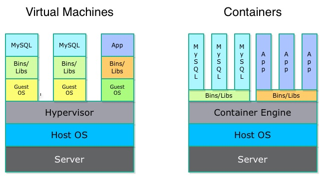
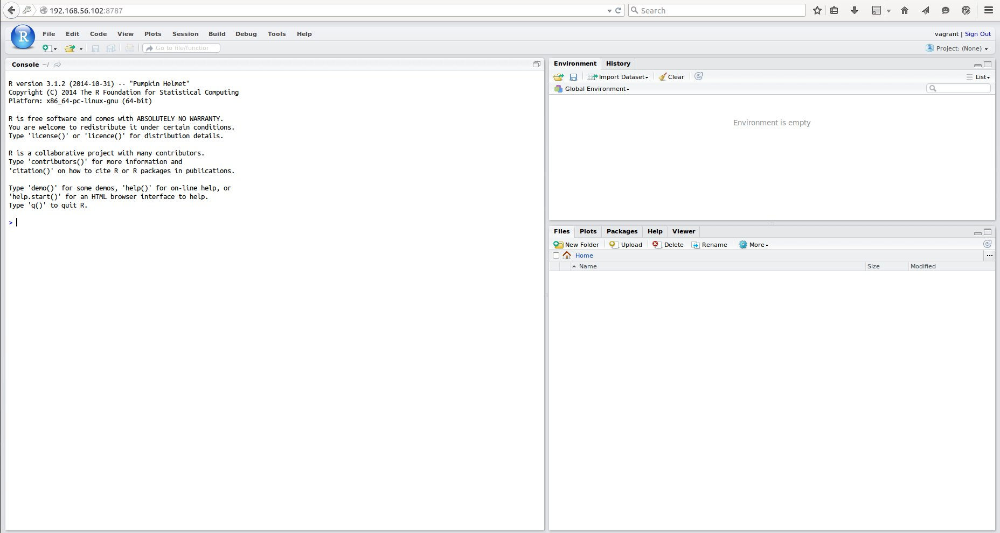

- Linux 上的命令列環境
- 如何利用docker快速架設可用的Rstudio Server、http server、各種database
- Rstudio Server界面、專案管理、版本控制管理
- 版本控制入門(git)
- 解決數種實務上讀取資料的問題
- 將功能整合至套件之中
R 軟體套件開發實務應用- 環境設定、語言介紹
Wush Wu
學習目標
今日環境介紹
- Virtual Box架設的虛擬機器
- Ubuntu 14.04 from Vagrant
- 已經先行架設好Docker以及數個客製化docker images
- 預設ip為
192.168.0.50- 如本機端無法連線至
192.168.0.50，請將ip更改為dhcp(按p看指令)
- 如本機端無法連線至
命令列
- 虛擬機器的GUI
- 各種ssh client，如: pietty(windows)、openssh(OS X, ubuntu)
- 講者先準備的web-based ssh client，請用瀏覽器打開
https://<vm ip>:4200 - Rstudio Server shell（但是需先開啟Rstudio Server）
- 位置：
192.168.0.50，帳號密碼：vagrant/vagrant- 如果替換成
dhcp，請利用ifconfig eth1來查看ip
- 如果替換成
啟動Rstudio Server
- 請在命令列輸入：
docker run -d --name rstudio -e USER=vagrant -e PASSWORD=vagrant -p 8787:8787 rstudio-build- 需等待Rstudio Server開啟，趁機學Docker
2014年IT界最受矚目的專案：docker
- Docker 是一種Virtual Container的技術，一種類似Virtual Machine的技術

Docker 生態系
- 只要一行指令即可執行許多Linux服務
- 利用差異化的技術，充分節省頻寬和硬碟
- 啟動快速，數秒就可開啟新的服務
- Dockerfile讓安裝過程公開透明
R and Docker
- rocker
- 今天的Rstudio Server改自rocker/rstudio
- Dockerfile
...
## User config and supervisord for persistant RStudio session
COPY userconf.sh /usr/bin/userconf.sh
COPY supervisord.conf /etc/supervisor/conf.d/supervisord.conf
RUN mkdir -p /var/log/supervisor \
&& chgrp staff /var/log/supervisor \
&& chmod g+w /var/log/supervisor \
&& chgrp staff /etc/supervisor/conf.d/supervisord.conf
EXPOSE 8787
...
Container And Image
Docker中的...
- image
- container
如同現實中的...
- Win7 安裝光碟
- 一台Win7作業系統的電腦
Docker 指令詳解：docker總覽
Usage: docker [OPTIONS] COMMAND [arg...]
cp Copy files/folders from a container's filesystem to the host path
exec Run a command in an existing container
images List images
rm Remove one or more containers
rmi Remove one or more images
run Run a command in a new container
Docker 指令詳解：docker run總覽
docker run -d --name rstudio -e USER=vagrant -e PASSWORD=vagrant -p 8787:8787 rstudio-build
Usage: docker run [OPTIONS] IMAGE [COMMAND] [ARG...]
-e, --env=[] Set environment variables
-i, --interactive=false Keep STDIN open even if not attached
-t, --tty=false Allocate a pseudo-TTY
-v, --volume=[] Bind mount a volume (e.g., from the host: -v /host:
-p, --publish=[] Publish a container's port to the host
登入Rstudio
- 在支援的瀏覽器輸入：
<ip>:8787- 帳號為：
vagrant - 密碼為：
vagrant
- 帳號為：
Rstudio 界面解說
- 工作區的功能解說

說明建立新專案(0.98.1091)
- Create Project From
- New Directory
- Existed Directory
- Version Control
- Project Type
- Empty Project
- R Packages
- Shiny Apps
動動手
- 請建立一個一般的新專案，名稱為：CRANLog
- 記得啟用git
我們來建立一個抓取資料的套件
目標簡介
- 資料位置：http://cran-logs.rstudio.com/
- 一個放有http://cran.rstudio.com/的線上記錄
- 我們想要抓取每天的套件下載量作分析
- 部份資料已放置於虛擬機器中
- 請執行下列程式碼，架設一個虛擬網站：
docker run -d --name httpd -v /home/vagrant/www:/usr/local/apache2/htdocs -p 80:80 httpdDocker Hub
- Docker Images的集散地
- 尋找你需要用到的服務
- 閱讀Image的使用說明
- 一行指令就可以架設各種服務
範例下載script
（修改自http://cran-logs.rstudio.com/上的範例）
# 開始日期
start <- as.Date('2015-01-01')
# 結束日期
end <- as.Date('2015-01-02')
# 展開所有日期
all_days <- seq(start, end, by = 'day')
# 扣掉已經下載的連結
missing_days <- setdiff(all_days, tools::file_path_sans_ext(dir(), TRUE))
class(missing_days) <- "Date"
# 拼湊出下載連結
year <- as.POSIXlt(all_days)$year + 1900
urls <- paste0('http://<ip>/cran-log/', year, '/', missing_days, '.csv.gz')
# 可以使用download.file來做下載
for(i in seq_along(urls)) {
download.file(urls[i], destfile = sprintf("%s.csv.gz", missing_days[i]))
}
R是一個以函數為主體的語言
看得到的
as.Dateseqsetdiff
容易忽略的
<-(for
讀取資料
續下載資料的程式
data <- read.table("2015-01-01.csv.gz", header = TRUE, sep = ",")
head(sort(table(data$package), decreasing = TRUE))
## digest DBI plyr manipulate Rcpp ggplot2
## 1009 973 896 877 867 817
一個可能的實際情況...
- 資料來自於某個資料源:
download.file - 每天都要自該資料源更新資料:
missing_days <- ... - 使用既定程序分析出結果:
table - 輸出結果:
print
把1 ~ 4包成一個函數
pkg_count <- function(date) {
year <- as.POSIXlt(date)$year + 1900
urls <- paste0('http://<ip>/cran-log/', year, '/', date, '.csv.gz')
download.file(urls, destfile = sprintf("%s.csv.gz", date))
data <- read.table(sprintf("%s.csv.gz", date), header = TRUE, sep = ",")
sort(table(data$package), decreasing = TRUE)
}
當其他人需要分析結果...
- 將
pkg_count的程式碼丟給下游（Copy & Paste） - 將
pkg_count存成pkg_count.R，丟給下游（source） - 將
pkg_count包成套件，上傳到套件庫供下游下載
利用git 來傳送pkg_count.R
將pkg_count新增至CRANLog專案
- 將
pkg_count.R加入git 版本控制 - 設定作者資訊
將CRANLog專案上傳到github
- 註冊github帳號
- 設定ssh 金鑰
- 建立專案
- 上傳CRANLog
- 測試下載CRANLog
了解ssh key
- ssh實做了RSA 、DSA 和ECDSA 等非對稱加解密演算法
- 密碼是兩個檔案：
id_rsa(private)和id_rsa.pub(public) - 特色：用public加密的資料，只能用private解密。反之亦然。
- 廣泛的被運用於各種網頁應用之中，如https。
- github、AWS 等網站運用這種技術來做自動認證
- 密碼是兩個檔案：
建立ssh key:ssh-keygen
Generating public/private rsa key pair.
Enter file in which to save the key (/home/vagrant/.ssh/id_rsa):
Enter passphrase (empty for no passphrase):
Enter same passphrase again:
Your identification has been saved in /home/vagrant/.ssh/id_rsa.
Your public key has been saved in /home/vagrant/.ssh/id_rsa.pub.
The key fingerprint is:
dc:fb:51:c6:63:59:13:f1:06:91:d7:1c:dc:36:2f:da vagrant@rtutorial
上傳public key
- 在
github上開啟帳戶設定 - 管理金鑰(SSH Keys)
- 加入金鑰(Add SSH key)
- 貼上公開金鑰的內容
建立github專案
- 點選Create New（右上角的
+） - New Repository
- 設定專案資訊
設定遠端專案，上傳
- 依照畫面指示複製專案位址
圖片出處：git-tower

下載pkg_count.R
- 把自己當成另一個使用者
- 利用Rstudio自git repository建立新專案CRANLog2
運用git和github的好處
- 備份
- 版本控制：
- 錯誤可以回溯
- 多人共同編修時能解決衝突
- 錯誤發生時可以追溯原因
- 良好的討論空間
- 自動測試
- 自動部署
建立pkg_count的說明文件
- README.md
這個程式是用來統計R 的套件在CRAN上的下載次數
套件化
建立套件專案CRANLog
- 建立專案
- 刪除部分檔案
- 建立檔案
pkg_count.R
將套件放置至私有套件庫
- 打包套件
- 在終端機將套件複製到
~/www/R/src/contrib- 切換到
~/www/R/src/contrib docker cp rstudio:/home/vagrant/CRANLog_1.1.tar.gz .
- 切換到
- 在該目錄下更新套件資訊（
PACKAGES,PACKAGES.gz）（卡住）
利用Docker更新套件資訊
- shell
cd /home/vagrant/www/R/src/contrib
docker run -v `pwd`:/src -w /src -it --rm rstudio-build R
- R
tools::write_PACKAGES(".")
Rscript
Usage: /path/to/Rscript [--options] [-e expr [-e expr2 ...] | file] [args]
--options accepted are
--help Print usage and exit
--version Print version and exit
--verbose Print information on progress
--default-packages=list
Where 'list' is a comma-separated set
of package names, or 'NULL'
or options to R, in addition to --slave --no-restore, such as
--save Do save workspace at the end of the session
--no-environ Don't read the site and user environment files
--no-site-file Don't read the site-wide Rprofile
--no-init-file Don't read the user R profile
--restore Do restore previously saved objects at startup
--vanilla Combine --no-save, --no-restore, --no-site-file
--no-init-file and --no-environ
將Rscript和docker run結合
cd /home/vagrant/www/R/src/contrib
docker run -v `pwd`:/src -w /src -it --rm rstudio-build \
Rscript -e "tools::write_PACKAGES('.')"
直接從套件庫安裝
- 可能需要重新啟動R
install.packages("<pkg name>",
repos = "http://<ip>/R",
type = "source")
統一編號查詢(mongodb)
- 很多時候，我們會使用代碼來代表某些資料
- 代碼的意義可能放在某些資料庫之中
- 在製作報表的時候，需要將代碼轉譯為文字
- 資料來源：twcom(g0v)
啟動mongodb
docker run -d --name mongo -p 27017:27017 r-mongo
安裝套件rmongodb
# http proxy
Sys.setenv(http_proxy="<proxy location>")
install.packages("rmongodb")
查詢mongodb的必備知識
mongo.createmongo.find- cursor related
mongo.cursor.nextmongo.cursor.value
- bson related
mongo.bson.to.list
mongo.create
?mongo.create
mongo.find和cursor
- Iterator(迭代器)
- 取值
- 有沒有下一個
ooo... ==next==> ooo...
^ ^
R 中有沒有辦法使用類似迭代器的概念?
readLines+ connection- 讀一行資料做處理
- 處理完畢之後再讀下一行資料
- 讀到沒資料或connection被關閉為止
- 利用bash pipeline
|來作類似的效果
rmongodb的cursor
ooo... ==`mongo.cursor.next`==> ooo...
^ ^
將統編轉換為公司名稱
library(rmongodb)
mongo <- mongo.create(<ip>)
id <- "70794974"
cursor <- mongo.find(mongo, "twcom.cominfo", list(id = id))
mongo.cursor.next(cursor)
obj <- mongo.bson.to.list(mongo.cursor.value(cursor))
mongo.disconnect(mongo)
obj$name
建立套件VATInfo
- 請將「將統編轉換為公司名稱」的功能函數化，加入套件中
- 更新
DESCRIPTION- 加入
Depends: rmongodb
- 加入
將統編轉換為公司董監事名單
library(rmongodb)
mongo <- mongo.create(<ip>)
id <- "70794974"
cursor <- mongo.find(mongo, "twcom.boards", list(id = id))
retval <- c()
while(mongo.cursor.next(cursor)) {
obj <- mongo.bson.to.list(mongo.cursor.value(cursor))
retval <- c(retval, obj$name)
}
retval
擴充VATInfo的功能
- 請將「將統編轉換為公司董監事名單」的功能函數化，加入套件中
R 套件和git
- 加入：
- R/
- DESCRIPTION
- NAMESPACE
DESCRIPTION
- 裝載套件的關鍵資訊
- 目前僅需了解套件名稱和Depends即可
- 其他內容在套件開發中詳述
經驗分享：如何回報bug
https://github.com/mongosoup/rmongodb/issues/20
- 清楚的描述環境
sessionInfo()
- 提供可重現錯誤的程式碼
- 回報錯誤時，注意禮貌，適時表達感謝與尊重
一般Open Source軟體對於錯誤回報的處理
- 確認錯誤（看回報的人多不多、開發者能不能重現錯誤）
- 尋找原因（交給開發者）
- 徵求貢獻者（開發者有時會將錯誤留給其他貢獻者，甚至是回報錯誤者）
- 測試
- 上更新 （除非有重大錯誤，否則每個月只能上傳CRAN一次）
SQL Database
政府標案資料
- 資料來源：DSP
啟動PostgreSQL
docker run -d --name r-postgres -p 5432:5432 r-postgres
安裝RPostgreSQL(需要安裝其他相依模組)
- 安裝時會發生錯誤
- 平時只能google錯誤訊息
- 歡迎在台灣的R 的討論區交流
- Taiwan R User Group，mailing list: Taiwan-useR-Group-list@meetup.com
- ptt R_Language版
- R軟體使用者論壇
- 或是在世界性的R 論壇
利用Docker exec進入container
- 安裝libpq-dev
docker ps # 列出現在正在跑的Docker Containers
docker exec -it rstudio /bin/bash # 在Docker Containers之中執行指令
apt-get update
apt-get install libpq-dev # then y
- 如果
apt-get libpq-dev出現錯誤，請再apt-get update一次試試看
連結資料庫
install.packages('RPostgreSQL', repos = 'http://<ip>/R')
library(RPostgreSQL)
db <- dbConnect(dbDriver("PostgreSQL"), host = "<ip>",
user = "vagrant", password = "vagrant")
dbListTables(db)
dbReadTable
tenders <- dbReadTable(db, "tenders")
SQL Command
tenders <- dbGetQuery(db, "SELECT * FROM tenders LIMIT 1")
常見問題：中文編碼
編碼知多少
- 位元組(byte)是目前電腦處理記憶體的基本單位。一個位元組有8個位元(bit)。ex:
- 00000001, 00111101
- 可以用兩個hex code來代表一個位元組。ex:
- 00000001 ==> 0000,0001 ==> 0x01
- 00111101 ==> 0011,1101 ==> 0x3D
編碼知多少
- 文字的"0"和數字的0，在電腦中是不同的！
- R 中整數0L的記憶體，寫成hex code是 00 00 00 00 (佔有四個位元組)
- 數值0.0的記憶體，寫成hex code是 00 00 00 00 00 00 00 00 (佔有八個位元組)
- 文字"0"的記憶體，寫成hex code是 30 (佔有一個位元組)
- 「編碼」就是將位元組合變成可讀文字的規則。
- ASCII:
- 0x30 => "0", 0x41 => "A", 0x61 => "a"
- 0x00 => 空字串(NULL)
- ASCII:
R 如何處理文字character？
- 一段文字，就是一塊連續的「位元組」，直到遇到0x00為止
- 包含0x00的連續位元組，在R 中請使用
RawVector來處理
萬國碼
- 最初的ASCII 編碼只定義了大部分的英文字母和數字而已
- 各國自行擴充編碼，例如台灣的：big-5，每一個字用兩個位元組表示（Windows預設的繁體中文編碼）
- 世界統一的編碼，UTF
- UTF-8（OS X、Linux預設的繁體中文編碼）: 每一個「字」可能是1或2個位元組，中間絕對不會有
NULL
- UTF-8（OS X、Linux預設的繁體中文編碼）: 每一個「字」可能是1或2個位元組，中間絕對不會有
R 的編碼錯誤訊息
## Error: 無效的多位元組字串於
## '<bb>O<a5>_<a5><ab><ac>F<a9><b2>ĵ<b9><c1>`<a7><bd>'
## Error:
## line 1 appears to contain embedded nulls
SQL資料庫中解決編碼問題
SET NAMES 'UTf-8';
SET NAMES 'BIG5';
試著讀取BIG5 看看亂碼
dbGetQuery(db, "SET NAMES 'BIG5';")
dbGetQuery(db, "SELECT * FROM tenders LIMIT 1;")
dplyr 整理資料的好幫手
install.packages('dplyr', repos = 'http://<ip>/R')
dplyr 的常用函數

dplyr的函數可作用於
- data.frame
- data.table
- SQL Database(PostgreSQL, MySQL...)
查詢廠商參與的標案
colnames(tenders)
# 查詢統一編號70794974所參與的標案，這裡的「統一編號」即「廠商代碼」
filter(tenders, 廠商代碼 == "70794974")
# 取得標案的id
select(filter(tenders, 廠商代碼 == "70794974"), pkAtmMain)
# 去除重複的標案id
unique(select(filter(tenders, 廠商代碼 == "70794974"), pkAtmMain))
%>%, magrittr
# 去除重複的標案id
unique(select(filter(tenders, 廠商代碼 == "70794974"), pkAtmMain))
library(magrittr)
filter(tenders, 廠商代碼 == "70794974") %>%
select(pkAtmMain) %>%
collect %>%
unique
dplyr 和SQL Database
library(dplyr)
db <- src_postgres(host = "192.168.56.102", user = "vagrant", password = "vagrant")
tenders <- tbl(db, "tenders")
x <- filter(tenders, 廠商代碼 == "70794974")
x$query
filter(tenders, 廠商代碼 == "70794974") %>%
select(pkAtmMain) %>%
collect %>%
unique
dplyr 和SQL Database
- 一般指令不做完整的計算(Lazy Evaluation)
- 在以下指令時，會做完整計算
collect：將結果傳回Rcompute：在database建立暫存表格collapse：將query轉乘table expression
- 如果熟悉SQL 的使用者，可以利用
compute和collapse來優化查詢
動動手
- 請建立一個函數，給定統一編號，查出所有該編號有參與的標案
- 再建立一個函數，給定標案id，查出有參與該標案的統一編號
- 將這兩個函數加入套件VATInfo之中
- VATInfo套件的Depends需加入RPostgreSQL和dplyr
型態問題
- 這裡的「統一編號」或「廠商代碼」是數字還是字串？
R 的資料型態
R 資料的Atomic Type
- Atomic type都是向量
- 常見的資料型態
- numeric
- logical
- integer
- character
- 可利用
class查詢物件型態
- 常見的資料型態
- 其餘資料物件都是Atomic type所組合而成
R 中組合成高階物件的方式
- list, data.frame, environment
- attributes
- S4
list, data.frame
iris
str(iris)
## 'data.frame': 150 obs. of 5 variables:
## $ Sepal.Length: num 5.1 4.9 4.7 4.6 5 5.4 4.6 5 4.4 4.9 ...
## $ Sepal.Width : num 3.5 3 3.2 3.1 3.6 3.9 3.4 3.4 2.9 3.1 ...
## $ Petal.Length: num 1.4 1.4 1.3 1.5 1.4 1.7 1.4 1.5 1.4 1.5 ...
## $ Petal.Width : num 0.2 0.2 0.2 0.2 0.2 0.4 0.3 0.2 0.2 0.1 ...
## $ Species : Factor w/ 3 levels "setosa","versicolor",..: 1 1 1 1 1 1 1 1 1 1 ...
attributes
matrix,factor
attributes(iris$Species)
An example of list + attributes: S3
g <- lm(dist ~ speed, cars)
str(head(g))
## List of 6
## $ coefficients : Named num [1:2] -17.58 3.93
## ..- attr(*, "names")= chr [1:2] "(Intercept)" "speed"
## $ residuals : Named num [1:50] 3.85 11.85 -5.95 12.05 2.12 ...
## ..- attr(*, "names")= chr [1:50] "1" "2" "3" "4" ...
## $ effects : Named num [1:50] -303.914 145.552 -8.115 9.885 0.194 ...
## ..- attr(*, "names")= chr [1:50] "(Intercept)" "speed" "" "" ...
## $ rank : int 2
## $ fitted.values: Named num [1:50] -1.85 -1.85 9.95 9.95 13.88 ...
## ..- attr(*, "names")= chr [1:50] "1" "2" "3" "4" ...
## $ assign : int [1:2] 0 1
S4
dgCMatrix
library(Matrix)
(m <- Matrix(c(0,0,2:0), 3,5))
## 3 x 5 sparse Matrix of class "dgCMatrix"
##
## [1,] . 1 . . 2
## [2,] . . 2 . 1
## [3,] 2 . 1 . .
str(m)
## Formal class 'dgCMatrix' [package "Matrix"] with 6 slots
## ..@ i : int [1:6] 2 0 1 2 0 1
## ..@ p : int [1:6] 0 1 2 4 4 6
## ..@ Dim : int [1:2] 3 5
## ..@ Dimnames:List of 2
## .. ..$ : NULL
## .. ..$ : NULL
## ..@ x : num [1:6] 2 1 2 1 2 1
## ..@ factors : list()
輸出的型態
- 在一個弱型態語言中，告知使用者輸出的型態能帶給後續使用者很大的方便
- 建立函數時，如果能確定型態，對於後續的處理會更方便
- 範例：統一編號
-
is.xxx, xxx為型態名稱
- 範例：統一編號
-
- 檢查TRUE/FALSE時，建議用
isTRUE
if (NA) print("true") else print("false")
## Error: missing value where TRUE/FALSE needed
if (isTRUE(NA)) print("true") else print("false")
## [1] "false"
輸出的型態範例：矩陣
m <- matrix(1:4, 2, 2)
m[,1]
## [1] 1 2
m[,1,drop=FALSE]
## [,1]
## [1,] 1
## [2,] 2
# ?`[`
list 和 environment
常見的問題
a1 <- 1
a2 <- 2
a3 <- 3
a4 <- 4
a5 <- 5
df <- data.frame(a = c(a1, a2, a3, a4, a5))
- 能不能用迴圈來寫
c(a1, a2, a3, a4, a5)？ - 利用
1:5建立字串c("a1", "a2", "a3", "a4", "a5")paste("a", 1:5, sep="")、paste0("a", 1:5)sprintf("a%d", 1:5)
List
- Atomic Type是某種資料的向量
list是「R 物件」的向量list中的物件可以建立「姓名」（key）
x <- list()
for(i in 1:5) x[[paste0("a", i)]] <- i
df <- data.frame(a = unlist(x))
[和[[
- 相同點
- 兩者都可以接名稱或整數
x[key];x[[key]]x[i];x[[i]]
- 兩者都可以接名稱或整數
- 相異點
[會維持型態[[會改變型態
Environment
- 如果已經有了
a1到a5的物件了呢...
a1 <- 1
a2 <- 2
a3 <- 3
a4 <- 4
a5 <- 5
Environment管理變數和物件之間的關係
a1 --> 1
a2 --> 2
...
a5 --> 5
- 字串==>物件
- 類似
list
globalenv()
env <- environment() #globalenv()
env[["a1"]]
x <- c()
for(i in 1:5) x[i] <- env[[paste0("a", i)]]
練習專案
VATInfo
- 已完成
- 將統編轉換為公司名稱
- 給統編，查詢公司的董監事
- 給統編，查詢有參與的政府標案id
- 給政府標案id，查詢有參與的公司統編
VATInfo
- 請利用VATInfo來完成以下目標：
- 請列出"70794974"的董監事
- 請列出"70794974"有參與的政府標案
- 請查出參與這些標案的公司統編
- 請再查詢這些公司的董監事